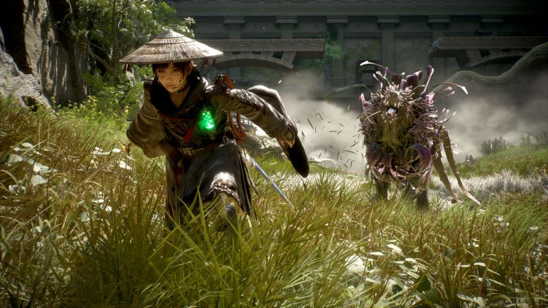
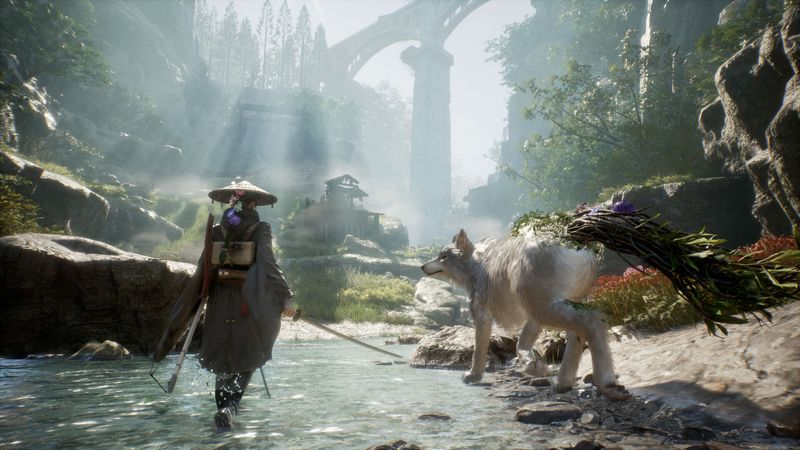

The thirty-second version
Game Freak took a real swing.
Every Pokémon game has been secretly asking for a dog. Now it's the whole game.
Beast of Reincarnation is Game Freak reaching for something new and mostly grabbing it. The one-woman-one-dog framing is genuinely lovely, the combat's fusion of real-time and turn-based takes a bit of getting used to but pays off, and the world it drops you into is prettier and grimmer than we expected from these guys. We're glad it exists.
Okay, what is this thing?
Meet Emma. Meet Koo. Emma is a woman with a mission, Koo is a dog with opinions, and the world they walk into looks like someone painted a folktale and then quietly set it on fire. Game Freak deciding to make a full action-RPG that isn't Pokémon is the kind of swing we love to see, and inside the first hour we were already texting the group chat about our dogs.
The combat pitch is a fusion of real-time and turn-based, and it takes a bit of getting used to. You're moving Emma in the moment, but every real fight asks you to switch registers and think, which we bounced off for the first hour and then loved by the third. It's a lot to hold in your head early on, and clicks somewhere around hour three, at which point we found ourselves genuinely enjoying the fights.


Why it escaped the group chat
- One-person-one-dog action RPG, with real-time exploration and a turn-based combat layer.
- A non-Pokémon release from Game Freak, published by Fictions.
- The two protagonists are called Emma and Koo, and Koo is a dog, which is important.
Three dads enter
01
Dad Who Skipped the Tutorial
Koo is why I stayed and Emma is who I blame.
I clocked the dog on the store page and pre-decided I was playing it. Then I bounced off the combat's mixed register once, complained about it, and came back a day later because I missed the dog. I'm several hours in now, patting Koo whenever the game lets me. I'm thriving.
02
The Descent Guy
Two combat modes in one fight is exactly my kind of nonsense.
I respect Game Freak's willingness to stack a turn-based system on top of a real-time one, and I've spent my evenings working out which encounters reward you for slowing down. It rewards planning around the dog's behaviour, which I wasn't expecting and immediately started spreadsheeting. I'm quietly delighted.
03
Normal-ish Dad
A good game with a real hook, once you settle in.
This isn't the kind of RPG that grabs you in the first hour. The mixed combat took me a while to settle into, the world took getting used to, and the story takes its time. Give it a weekend, though, and it turns into a proper adventure with actual emotional weight, which is more than I bank on these days.
Who it is for and what to watch
Invite these people
- Anyone who wants an RPG with a dog protagonist who is also actually good
- Curious Game Freak fans who wanted proof they can do more than one thing
- Players willing to eat two hours of combat learning to enjoy hour three
Dad caveats
- The dual-combat idea takes real time to click; the first hour is rocky
- It's a big swing for the studio, and some edges show it
- You will absolutely start narrating your real dog's inner monologue afterwards
Receipts
Played on PC by two of us, one on keyboard and one on controller, across a couple of weeks. The third dad has a real dog and refused to play a video game about a fake one.